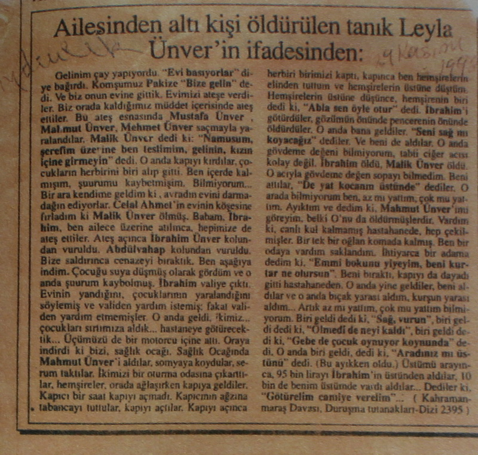

Necmi Sönmez’e
Zile basışından geldiğini anlarım,,, sık gelmez yılda birkaç kez,,, unutacakken onu,,, tıka basa roman dolu sanki,,, sanki boşaltmaya yazamadıklarının zehrini,,, yazar değil kendisi,,, helecan,,, ya değilsem evde,,, bir seferinde döndüğümde bakkaldan,,, eşiğe oturmuş bekliyordu beni,,, zeytin ekmek almıştım,,, çay yaptım,,, ilk kez görmüş gibi yedi yuttu zeytinleri,,, zavallı yavrum Alamanya’da yok mu zeytin,,, kapılara sığmayan koca bir adam oldu şimdi,,, en küçüğümle eşti,,, ilk cümlesi önemlidir,,, sonunu bilmediğim bir ilk cümle fırlatır ortaya: "Böylece o hayata bir süre daha dayanma gücü elde ediyorum"...
Tanıdığımda babasının omzunda mitinglere gelen minicik bir şeydi,,, bizhalk hep birlikte, “Yaşasın İşçi Sınıfı Öncülüğünde Tüm Halkların Mücadelesi”, “Tek Yol Devrim” diye çığırırken o “Çucuklara Dayak Yok!” diye en tizinden küçücük hançeresinin,,, sürgün şimdi,,, eritildi savruldu süpürüldü,,, hangi iyi şey oldu bittiyse dünyada,,, hangi hareket,,, kuşaklar arasında,,, babalarla torunlar,,, analar ve kızları,,, gönüllü sürgün,,, Avrupa kentinde,,, büyüdü,,, elinde üç kök menekşeyle ziyarete gelir beni,,, ne yapacağımı bilmem menekşeleri,,, iri bir bardağa koyar gelirim,,, bardağın suyu çamura keser birden,,, yurda geldiğinde,,, neden beni arar,,, küçüğümün yoldaşı,,, kimsesi kalmadı bu dünyada gerçi,,, neden bu yurda gelir zaten,,, yurt,,, onun yurdu olmaktan çıktı aslında,,, gene de,,, yurda döndüğünde,,, özlediği neydi burada bilemem,,, Boğaziçi,,, mimari,,, abidat ve mebanisi,,, rakı,,, Kanlıca’nın ihtiyarları,,, ben,,, Küçük Ayasofya Sokak’ta bir aralıkta oturan öldürülen arkadaşının annesi,,, Küçük Ayasofya,,, eskiden adı Aziz Sergius ve Bacchus Kilisesi olan,,, zaten İstanbul’da hemen hemen her sokak her cami her insanın vardır yeraltında birkaç kökü,,, başı da,,, çok başlı çok köklü bir yaratık,,, Saymazsak da en eskileri,,, Vaftizci Ioannes Kilisesi İmrahor Camii,,, Hagia Theodora Kilisesi Gül Camii olmuştur,,, Vefa’daki Cami Hagios Theodoros Kilisesi,,, Anastasius ve Ariadne tarafından yaptırılmış olan Hıristiyan kilisesi ise Kilise Camii,,, Pantakrator Manastın Zeyrek Camii,,, her şey üst üste,,, belki de iç içe ve dış dışa,,, zamansızlığa uğratılır insanın tarihi,,, yetişemezsiniz,,, değişmiş,,, gökyüzünden gayri,,, nohut oda bakla sofa benimkisi,,, Küçük Ayasofya’da,,, bir hırka bir lokma demiş atalarımız,,, otururum kendimle kendim,,, akşamüstü,,, akşamüstü geldi miydi,,, dayanamam,,, kim ne derse desin,,, çıkar voltamı atarım,,, ya Taksim Tünel arası,,, ya Hipodrom,,, Pera’nın en eski belli apartmanlarından birinin eşiğine çökerim,,, akşamüzerleri,,, yağmur da almaz pek,,, apartmana gireceklere geçecek bir yol bırakırım,,, ben kapalı kanadın önüne ilişirim,,, içeri girmem hiç,,, arkam karanlıktır,,, yukarı kata ve aşağı kata doğru gider merdivenler,,, aşağıya karanlığa yukarıya aydınlığa doğru ayrılır hayatlar,,, apartman dairelerinin büyüklüğü küçüklüğü, semtlerin kibarlığı adiliği,,, adil olmayan her şey doğal sayılmıştır uygarlığımızda,,, kimse ses çıkaramaz olmuştur artık,,, binlerce yılın getirdiği düzen,,, uygarlaştırma budur,,, herkesin olanla yetinmesi,,, başkaldırı eskidi,,, başka yollar bulmalı,,, bulana kadar,,, burayı peyledim ben,,, kara gözlükleri takarım,,, kumral peruğum başımda sakin,,, tanıdık bildik çıkarsa,,, onlardan çok korkarım,,, kimseyle konuşmak istemem geçmişi,,, oğlumu,,, Sami ağbiyle Suzan abla var,,, bu eşiğin sahipleri,,, oturduğum yerden tanıdım geleni geçeni gireni çıkanı,,, apartman sahibi Sami ağbi,,, sorar Suzan evde mi,,, biraz önce döndü,,, tanır eşik beni,,, ben de onu,,, oyulmuştur ortası hafifçe,,, çok estetik bir eğim oluşmuştur,,, çiğnene çiğnene yüz yıldır,,, delinmek üzere neredeyse,,, ortası,,, röntgenci deliği gibi,,, bu eşiği buradan olduğu gibi çıkarıp mezarıma dikseler,,, isterim isterim,,, ölünce,,, tam bir heykel,,, vasiyetime bunu koymayı unutmamalıyım,,, ben ölene dek delik de açılır belki,,, tam ortasından,,, bakınca katlanılmaz çirkinlikte mezar taşlarını gösterir,,, katlanılmaz özensizlikte,,, zevksizlik,,, avamlık,,, bu kentin her karışı şimdi,,, yoksulluk,,, yerleşiğin göçebesi,,, zaten o kadar yaşamam,,, delik açılasıya yani,,, benden önce Sami ağbi ölür ardından Suzan abla,,, yaşlılar artık,,, aynı saflarda çarpıştılar babamla bir zamanlar,,, savaşta değil,,, örgütleri eşti,,, bilinen şeyler,,, Sami ağbi diyeceğim,,, hâlâ eski günlerdeki gibi,,, Karagöl’den beri tanırlar beni,,, ellerinde büyüdüm sayılır,,, ölünce şu eşik mezar taşım olsun benim,,, eşikte oturmayı da istemiştim ondan,,, hay hay buyur otur kızım dediydi bana,,, gönlü ganidir kimi insanların,,, onlar şimdi varlıklı ama kaçmazlar anımsatandan geçmişini,,, evlerine de buyur ederler beni,,, gitmem,,, eşitlik yok artık aramızda,,, bazen öğüt vermeye kalkarlar dostça,,, ama artık anladılar beni,,, hayatı nasıl yaşayacağımı salık verenlerden de kaçarım,,, Karagöl bir krater gölüdür, Ankara’ya iki saat uzaklıkta bir krater gölü,,, kampa gitmiştik,,, bir grup,,, anlaşan solcu ailesi,,, çadırlarda kalmıştık,,, üç gün,,, üçüncü gün,,, yok bu öyküye girmeyeceğim,,, vardım yedi sekizlerimde,,, ağbi derlerdi babama,,, yılan dolu suyun karanlığından herkes ürkmüştü,,, yüzdük o suda gene de,,, yılan değil balıktı onlar,,, korkunçtur bu kentin akşamüstleri kızım,,, ah ben çok iyi yüzücüyümdür,,, şaşarsın bilsen,,, gözlerin yaşarır,,, Ortaköy Yüzme Havuzu’nda Alman hocalarla yetişmiş,,, yavrukurdu gibiydik denizlerin,,, ilk yüzücü kızları cumhuriyetin,,, cumhuriyetin bir kötülüğünü görmüş değilim,,, ama anlatacak değilim sana o günleri,,, akşamüstleri,,, dayanılmazdır bu kentin,,, intikam duygusu melankoli halinde oturur yüreğin ortasına,,, sen de bilirsin,,, onunla eşti yaşı küçüğümün,,, genç dostumla,,, küçüğüm derdim oğluma,,, yok oğlumu değil,,, genç dostumu anlatacaktım sana,,, onu mu,,, beni mi,,, şu şeytan çarpmış şu yamuk kenti mi,,, koynumda gezdirdiğim gazete varağını mı,,, hayatı mı,,, tümü de bağımlı birbirine ve akşamüzerleri gelir oturur yüreğine,,, tam insanlar işten çıkarken,,, yurdum derdi oğlum,,, ne yurdu kimin yurdu,,, sana ne demezdim,,, gitmedim mezarına,,, küçüğümün,,, aklımda toprak kalmamalı,,, öyle tel kafesler ardında gördüğüm son resim,,, masumiyetin umutlu gülümsemesi,,, karanlıkta mavileşen gözleri,,, babasını andıran ince yüzü,,, çökmüş avurtlarıyla,,, kaşları sarı saçlarıyla bir renkteydi,,, üstüne yürürlerdi koca panzerlerin,,, oğlumla birlikte,,, genç dostum,,, helecan,,, ben sağ kaldım sonunda,,, çekildim artık inime,,, pencerelerini örümcek ağıyla örttüğüm,,, unuttum yaşımı da,,, gençsin der içimden bir ses,,, paylaş birikimlerini,,, fıkırdayıp durur ikinci bellek,,, paylaşma,,, paylaşma bu sürü toplumuyla paylaşma sakın hiçbir şeyi,,, çekildim köşeme okuyup dururum büyüteçle,,, evrensel insanlık hali yakalamak mı,,, binlerce yıldır neden öldük sanıyorsun,,, oğlum neden,,, evrensel ortak insanlık haline inanmıyorum artık,,, inanıyor muyum yoksa,,, sanırım yaşlandırmak istiyorum kendimi,,, yakınlaştırmak ölümü,,, çoğu hadım edilmiş bebekler gibi çıktı hapishanelerden,,, genç dostum da öyle,,, büyüteç babamdan kalma,,, istifa ettiğinde genç yaşta askeriyeden,,, durmadan okurdu,,, büyüteçle,,, gözlerim yüzünden kaçmamış olabilirim bu yurttan,,, kaçmalıydım vaktiyle,,, gençken,,, oğlumu tutup kolundan,,, kaçmak mı denir bilemem,,, arananlar listesinde de değildim ki,,, o kaçtı,,, genç dostum diyorum ona hitap ederken,,, ne diyeyim,,, on sekizinci yüzyıl hitapları gibi biraz evet,,, mektuplaşsaydık,,, “senin” diye atardım imzamı sonuna mektubun,,, ya da “sizin”,,, ne İncelikliymiş on sekizinci yüzyılın mektuplaşan insanları,,, çok özenmişimdir,,, eskiden çocukken ben de önüme gelene mektup yazdım her vesileyle,,, “senin” ya da “sizin” diyebilmek için,,, imzadan önce tam üstüne,,, “senin”,,, biri anlamamış aşk ilan etmişti bana,,, bir başkası da “ben de senin!” demişti,,, mektup yazacak kimsem kalmadı ki şimdi,,, Biz ne kadar farklıyız onlardan hâlâ,,, turistlerden diyorum,,, Avrupalılardan,,, onlarla sık sık karşılaşırım,,, bizim orda,,, pek severler Burmalı Sütun’umu benim,,, kendi kültürleri,,, farklıyız farklıyız,,, yüz yıl en azından önümüzdeler,,, ne sandın,,, itiraf etmeliyiz,,, zorla onlardan olmak istemekteyiz,,, onur yok mu hiç bizde,,, ille de yetişmeliyiz onlara,,, olamayız ki,,, gene de bizi aşağı görmemelerini bekleriz,,, yirmi birinci yüzyıl bu,,, insan hakları zorla geldi çünkü,,, kendileri getirdi,,, insan hakları diye diye,,, kararttılar içimizden bazılarının gözlerini,,, görürler günlerini,,, gelemediğin yere göz dikmek,,, zorunlu iskân gibi bir şey,,, genç dostum,,, ne ad verebilirim ona başka,,, oğlumun yaşayan arkadaşı,,, adresini vermez,,, telefonunu da,,, mektuplaşmayız hiç onunla,,, eski solculuktan kalma güvenlik gerekçesi,,, hoş ben de sormadım bile adresini,,, o gelir istediği zaman,,, zile basışından anlarım,,, o sıra kendisine olağanüstü görüneni söyler ilk cümlede,,, başka bir yok oluş benim öyküm,,, üstünde dönüp durduğum anafor der,,, kimsenin işitemeyeceği uzaklığa kadar koştum,,, çığlıklarla dolu bir dünyaya bir çığlık da benden,,, işitiliyor mu der,,, konuşması bir tuhaftır,,, koparılmış gibidir kafası sözcüklerin,,, zaten ben konuşmaktan yazılı kâğıttaki kadar almam zevk,,, o anlatmasına anlatır da,,, dinlerim,,, acıymış önceden de önce mutsuzluk tanrısı olmuş sanki,,, bilmem,,, ben içimi dinlerim,,, ama anlamak da istiyorum onu,,, nasıl biri oldu şimdi,,, içerdeki deneyimlerden arta kalan parçaları neler,,, kimlere,,, kin bağladı,,, bağladı mı,,, sindi mi,,, çokları bebekler gibi masum ve mahzun çıkar oradan,,, hapisten,,, boynu bükük,,, bu pek öyle de değil,,, nerelerden geçti düşleri,, hıncı boğuldu mu içinde,,, bak dinle,,, biliyor musun bir sevgilim vardı benim,,, “konuş” diye hayalarını buran adamı kahkahalar atarak anlatırdı,,, insancıllığın böylesi de Marx’ın mı İsa’nın mı marifeti,,, mizacın mı,,, acısını örtme biçimi mi,,, onların bir suçu yok ki, sıradan adamcıklar işte sistem böyle onun yerinde sen de ben de olabilirdik diye savunurdu işkencecilerini,,, hümanizm nerelere getiriyor insanlığı değil mi kızım,,, hayalarını burana öteki tarafını da sen uzat,,, aaaa,,, böylece işkenceci toplumu güçlendirirsin sevgilim,,, kilise, cami güçlenir,,, çıkılmaz Orta Çağ’dan dedim,,, içimden tabii,,, bense,,, ilkin öç almak için intihar etmedim,,, oğlumun öcünü almadan intihar etmeyecektim,,, bekledim,,, ardından kimden öç alacağımı bilemedim,,, katilleri o kadar çok ki adalet isteyenlerin,,, bekledim bekledim,,, ardından,,, onları nasıl öldüreceğimi bilemedim,,, ardından,,, ardından bu duruma düştüm,,, olanlar oldu,,, uygarlaştırdılar bizi,,, genç dostumun işte bu yanlarını anlayabilmiş değilim,,, anlatmıyor,,, o da dönüştürebildi mi uyduruk bir şeylere hıncını benim gibi,,, ben bugün oyalanıyorum koynumdaki varakla,,, varak,,, gazete parçası yani,,, koynumun sıcaklığında başkalaştı yıllardır,,, tenimi aldı kendine,,, belki sana anlatırım bir başka gün,,, birisine anlatmak da ucuzlatıyor ya işi,,, ne bekliyorsun karşındakinden,,, o acıyı gidermesini mi,,, en iyisi susmak,,, susamıyor da insan,,, resim yapmaya başlamış sergi de açmıştı,,, genç dostum,,, hapisten çıktıktan sonra,,, bağıran dişsiz ağızlarla doluydu tuval,,, kanayan damaklarla,,, rüyalarıma girmişti,,, hiçbir şey sormadan kaçmıştım sergiden,,, kimindi o ağızlar,,, anladım tabii,,, kendi kendime işkence ederek yaşamayı seçtim sonunda ben de,,, son veremedim yaşama çünkü,,, kıyamadım kendime oğluma kıydıkları gibi,,, kolay oluyor işkence,,, kumandayla,,, bir kanaldan ötekine,,, robokoplar, taşlar, çocuklar, çocuklar, çocuklar, sesleri yangınlar içinde,,, ekranın içine atlayıp kurtarmak isteğiyle yanıp tutuşuyorsun değil mi,,, seyirlik işkencesi yöntemine tabi tutuyorlar insanları,,, kan gövdeyi götüren dünyayı çeviriyorlar panayıra,,, eğlenerek geleceğin kurbanlarıyla kendi intiharıyla sarhoş medya,,, ama insandaki yaşama içgüdüsü beter bişey kızım,,, inan bana arsız yüzsüz ölümsüz bişey,,, uyduruyorsun her bahaneyi,,, ölmemek için,,, neyse ki Üç Başlı Ejderha girdi hayatıma,,, bir de şu eşik,,, bir de şu varak kalbimin üstündeki,,, sabra dönüştürüyor kini,,, bir gün diyorsun,,, bir gün belki de belli mi,,, intihar ederim atlarım Üç Başlı Ejderha’yı çeviren demirlerden aşağıya,,, bir gün,,, neden orayı seçtim bilmiyorum,,, Burmalı Sü- tun’u neden,,, bir bilebilsem,,, aslında bir mızıldanma benimkisi,,, bir telaş oğlumu unutmanın,,, ihanetimin sürüklediği,,,
Üç Başlı Ejderha İstanbul’daki en eski Yunan sütunudur.
Sütun 3 yılanın birbirine dolanmasından oluşmuş bir sarmaldır. Adlarından biri de Burmalı Sütun olan bu sütun Sultanahmet Meydanı’ndaki bugünkü yerine taşınmadan önce Delfi Tapınağı’ndaydı. Üzerinde bir tütsü kazanı dururdu. Kazan som altındandı.
4. yüzyılda Persleri yenen 31 Yunan kenti vardır.
Bu kentler savaşta Perslerden ele geçirdikleri zırh, kalkan, zincir gibi zafer ganimetlerini eriterek yaratmışlardı eşi benzeri olmayan Üç Başlı Ejder ’i.
Bu şaheser, 8 metre boyunda ve 29 burmadan oluşmakla birlikte şu anda ancak 5 metrelik bir kısmı ayakta durmaktadır.
* * *
Akşamüstleri geliyor aklıma,,, gözleri,,, oğlumun,,, gözleri hani,,, şimdi karıncalar hopur hopur dağlaştırmışlardır toprağını,,, dolaşıyordur damarlarında kanı,,, ölü yiyici mahlûkatın,,, varınca oraya,,, Spina’ya,,, duvara,,, Spina’nın altında en başından beri vardır birikmiş suyu doğanın,,, bataklıktır şimdi kaynaşır su çıyanları, yılanları, kırkayakları,,, ama 330’larda Hipodrom Büyük Saray’ın önü bomboş,,, pırıl pırıldır suyu imparatorun,,, ben,,, eski adı Aziz Sergius olan Küçük Ayasofya’da oturan niteliksiz kadın,,, evimden çıkar bir kolaçan ederim sekiz metre boyunda ve 29 burmadan oluşan ama ancak 5 metresi ayakta kalmış olanı,,, ayakta durduğu yerin bir adı da “Tanrı’nın Kenti” olan Üç Başlı Ejderha’yı,,, kolaçan ederim,,, birden toplanırlar ardımda,,, nasıl haberleşirler,,, nasıl bulurlar beni onca veled-i zina,,, surların dibinden,,, kovuklarından taşların,,, Blakerna’nın temelinden,,, Tekfur Sarayı’nın kalan duvarlarının içinden fışkırır itişe kakışa yürürler ardım sıra ağız mızıkaları, dümbelekleri, karışık konuşmalarıyla sefillik cinleri,,, severler beni,,, bilebildikleri kadarıyla sevmeyi,,, ilkin çaldılar torbamı,,, paramı aldılar,,, geri verdiler kimlik cüzdanımı ve oğlumdan elimde kalan son fotoğrafları,,, gözleri oğlumun,,, gözleri,,, gözlerinde bulurdum can tılsımımı,,, gözleri hani,,, cinler taburu gelince sütun’a çember olur çevirirler yanım sıra kendilerini,,, demirlerine Ejderi Peyker’in,,, orada,,, meydanda,,, leylekler de Spina’dan fırlayan yılanları kaparmış bir zamanlar,,, fırlatırlarmış oradan geçen kibar beylerine hanımlarına taze Bizans’ın,,, boynuna dolanır boğarmış adamı yılan,,, bilmem artık,,, oysa zararsızdır, sevecendir benim su yılanlarım,,, tinerci taburum,,, yankesicilerim,,, çok iyi tanırım onları,,, yılanları,,, Karagöl’den,,, sarışınlaştırırlar gölü,,, çıkarak su yüzüne,,, karıncalar,,, karıncalar hallaç gibi atarlar toprağını insanların,,, yıllar yılı işkence ettim kendime uzaktan kumandayla her coplanışında çocukların,,, her tekmelenişinde,,, her sürüklenişinde yırtılışında tinercilerin,,, yerlerde,,, öyle sahnelerde ben de,,, ben de,,, ben de,,, keşfettim sonunda bu eşiği,,, insan ölümün üstüne gidemiyor öyle,,, arada bir de gezinmeye çıkıyor şu avluda,,, Şabuh Bey’e merhaba demeyi huy edinmiş oluyor,,, köşedeki şair kitapçıyla hoşbeş ediyor,,, seni tanımayı biliyor,,, olamıyor insansız bir türlü,,, ne kadar özense de yoğunlaştırmaya yalnızlığını,,, unutturdum kendime ölümü,,, işte bir sır sana,,, unutturdum oğlumu kendime,,, yasım kurudu içimde,,, sen geçerdin önümden atölyene,,, kıpti sanırdın böyle pejmürde beni,,, bakışından anlardım,,, değilim,,, başımda aklım,,, ama bir türlü rahat rahat deliremedim,,, kaçamadım da,,, onsuz yaşayamam artık,,, şu kentsiz,,, Yeni Roma,,, ne eşiğimden ayrılırım,,, ne yılanlı sütunundan o meydanın,,, turistleri görürsem oralarda,,, At Meydanı’nda,,, sütunun çevre demirlerine tutunur yere atacakmış gibi yaparım kendimi,,, dibe,,, beş metresi ayakta kalmış,,, ölünmez ki beş metreden,,, gene de sarkarım boşluğuna ejderhanın,,, ödü kopar turistlerin,,, para falan vermeye kalkarlar,,, birbirlerine bakarlar çaresizlikle,,, merhametini sevdiğim insanları,,, acaba ortak insanlık durumunu gerçekleştirecekler mi bunlar diye düşünürüm,,, proletarya diktatörlüğü yerine yani,,, şu dünyada olur mu öyle bir şey,,, özgürleştirmişler mi yeterince kendilerini,,, ama üzüldüklerini gözümle görürüm,,, o vakit acırım onlara daha tehlikeli hareketler yaparım,,, biz farklıyız dercesine,,, övünür gibi kültürümüzle,,, cezalandırmak için kendimi,,, kültürümüz dediğim dinimizle,,, başka kültür yaratması engellenmiş bir ulusuz çünkü,,, öteki dünya korkusuyla tutarız kendimizi,,, yalvarırlar bana,,, turistler,,, gözleriyle,,, kanlı tarihlerinden mi almışlar insanlık dersi,,, biz niye alamamışız,,, nasıl da yufka yürek kesilmişler,,, bilmişler mi değerini insanın,,, turistler,,, ama tanımıyorlar bizi,,, onlar bana acırken benim soytarılar taburu soyarlar çantalarını,,, çembere alırlar bizi göbek atarlar,,, sokak düğünü gibi,,, ne yapalım öyle işte buraların allahı,,, bak şimdi,,, görünce öyle parmaklıklarda dolaşan cambaz kadını,,, eğlenceye susamış bizim yerli neronlar tribünlerden,,, gösterirler copu,,, atlama da görelim diye bekleşirler seni,,, sezerim zaten çocukların ağmasından gökyüzüne geldiklerini,,, benim tabur söverek yedi ceddine bu milletin ozon tabakasının dibine yapıştırır kendini,,, oyarlar biraz daha boşluğu,,, kara ağızlı kıyamet kuyusu,,, asitti, tükürüktü, tinerdi, çişti yağdırırlar üzerine insanlığın hoh kahkalarıyla,,, ben de demirlerden bu yana sıçrar,,, gelmeden polisler karışırım ne diyeceklerini şaşırmış,,, ağzı açık turistlerin arasına,,, bu geleneksel bir karşılamaydı derim onlara,,, silkinirler,,, gökyüzüne kahkaha taburuna bakarak gülümsemeye başlarlar önce,,, sonunda atarız hep birlikte kahkahalar babalan tutmuşçasına,,, işin tuhafı polisler de girer aramıza ve halk olduklarının bilincinde olmadan bizimle birlikte bakarak gökyüzüne başlarlar sefillik cinleriyle atışmaya,,, dakikalarca gider gelir yerle gök arasında neşe,,, ardından kendine gelir güvenlik,,, elleri coplarında koşarak çıkar giderler aramızdan geldikleri yerlere,,, bir süre donar kalırlar,,, turistler de,,, masmavi gözlerine birikmiş binlerce zamanla bakışırız öylece,,, sokulurlar birbirlerine,,, tabur olurlar Sultanahmet Camii’ne,,,
* * *
Neden mi gitmedim gençken,,, gençken güçlü sayılırdık,,, aklımıza kaçmayı getirmeyecek kadar güçlü,,, “1 Mayıs Dünya Proletaryası’nın Dayanışma Gücü” olarak hep bir aradaydık,,, inanıyorduk,,, eşim istediği gibi vuruşarak değil Asya Gribi’nden öldü,,, o zaman çok modaydı,,, ona da çok yandım,,, ama oğlum,,, genç dostum her gelişinde hep aynı gazeteyi, varağı, sayfayı, kupürü, altın yaprağı buluyor oldu elimde,,, ne okuyorsun,,, hiç,,, neden saklarım ondan bilmem,,, genç dostumdan,,, ama sana gösterebilirim belki bir gün,,, şu kâğıt parçasını koynumdaki,,, Kuran-ı Kerim gibi okur üflerim yaprağın üzerindeki sözcükleri,,, kimseye vermem,,, belki de bunu okuya okuya unuttum kendi acımı,,, kendimi bir mertebeye eriştirdim,,, ne mertebesi,,, laf işte,,, abis’e abis’e,,, her insanın elinde bundan bir nüsha olmalı bence,,, kefareti olarak Türkiye Cumhuriyeti’nin,,, bununla tövbe istiğfar getirmeli,,, nasıl gözyaşları döktüm bu varağın üstüne,,, oğlum değildi artık, oğullarım kızlarım onlar benim,,, yoksa acımakta mıyım hâlâ kendime,,, siz söyleyin,,, öldürmediysen kendini sahtedir acın değil mi,,, ama insan zorunlulukların da yarattığıydı ya hani,,, öyle öğrenmiştik bir zamanlar,,, hocalarımızdan öğrenmiştik,,, hapislerde çürüyerek bilgeleşmişlerdi tümü,,, doğru muydu bilmem ki,,, kaç yıldır okuyorum ben bu parçayı,,, acı derinleştirir insanı dedim genç dostuma,,, çukura doğru büsbütün derinleşirsin,,, gireceğin çukura,,, okuduğun bir kâğıt parçasıdır ama,,, şaheserleşir, alır seni altına, toprak altına, sarnıca döndürür,,, açık ya da kapalı sarnıca,,, birikintiye,,, Bonus Sarnıcı’na,,, Aspar Sarnıcı’na üstü zamanla çamurla dolan, Yerebatan, Binbirdirek,,, kuyuya, uçuruma, iskandil’e, sondaja, gayyaya, dibe, abis’e,,, karşı kaldırımdaki iri yarı kara kadını da attım içine,,, bana çarpan ve göremeyen beni,,, oğlumu da,,, oğlumu da attım abis’e, abis’e,,, “abis”i bulur sonunda,,, dibi,,, Spi- na’yı,,, aynı cümleyi,,, dakikalarca, günlerce, aylarca, yıllarca okursa o insan,,, ezberlerse,,, yutarsa,,, mim koyarsa, hıfzederse, kulağına küpe, belleğine rekzederse,,, rekzederse,,, Burmalı Sütun’un mermer tabanının yere rekzedilmesi gibi,,, bir daha sökülüp atılamaz içinden o kupür, o varak, kopsa da yılanın başı dedim,,,
* * *
(Üç Başlı Ejderha) üzerindeki altın tütsü kazanı ya da sehpası, buraya, İstanbul'a taşınmadan önce kaybolmuştu.
Bu nokta önemlidir.
Bu nokta, Osmanlı İmparatorluğu’nun vahşi bir kabile imparatorluğu olmadığının kanıtı olarak tutulmalıdır akılda.
Her ne kadar P.Ğ. İncicyan kitabında bazı yazarlara dayanarak, “üç yılan başının Fatih, Kanunî, IV. Murat zamanlarında birer birer kırılarak ortadan kalktığına dair rivayetler"den söz ediyorsa da...
Belirtmek gerek, gerçi kimi antik efsanelerde “dört ejder birbirlerine ağızlarını vermişlerdir” diye yazsa da doğrusu üç ejderdir. Yazıcıoğlu: “Ve dahi tuncdan üç yılan dökmüşler birbirine sarmaşmış üçü üç yerde baş çıkarmış içi mücevvef on beş arsun yüce idiler” der.
Akarsu gibidir insan bilirsin kızım,,, giriverir biçimden biçime,,, öyle bir toprakta yaşıyoruz ki,,, eski bir duyguyu yeniden yaşar gibi sürekli,,, İmparator Valans otuz metre yükseklikten aşırdı su kemerlerini,,, kırktan fazla kemerden oluşan kemer,,, imparator Constantinus döneminde Philoksenos sarnıcından dağılmaktaydı su bu kente,,, şimdi tanklarla dağıtılıyor bizim mahalleye,,, Juistinıanos’un su kemerleri bu kentte,,, tanrının mimarlık ettiği kent bu,,, baktığımda şöyle bir Ayasofya,,, Tanrı ile İsa’nın arasında Kutsal Ruh’un temsilcisi “mızraklı” mimarın öldürülüşü,,, çok acı çekti Fatih Sultan Mehmet o kiliseyi aşan bir cami yaptırmak için,,, Evliya Çelebi merhum,,, Sultan’ın Fatih Camii’ne bakıp:
“Benim camiim Ayasofya kadar âli etmeyip benim birer Rum haracı ’değer sütunlarımı kesûp camiimi alçak ettin ” dedikde mimar eydür, “Padişahım, İstanbul'da zelzele çok olup metanet üzere ilâ inkirazüd deveran müsebbed ola deyu iki amudu üç zirâ kesûb Ayasaofya’dan sehl alçak etdim” deyü özür buldu. Özrü cürmünden eşeddür deyü Ebülfeth aman vermeyüb mimar başının iki ellerini bileklerinden katl’etti” der,,,
Fatih Sultan Mehmet’in otağ-çadır mimarisi dışında ilk kez görüp hayran kaldığı: “Zira kim hiç insan işine benzemez” sözünün dudaklarından döküldüğü kenttesin,,, dudakları ince, kaşları ince, burnu ince ama kavislidir Fatih’in,,, erguvan rengi sandalları ayağına geçirip Roma İmparatorluğu’nun dünya imparatorluğu istemini Osmanlı İmparatorluğu istemine dönüştürdüğü kent de burası,,, ki onun da başını yedi,,, işte şu eşik,,, günün birinde delinir ortası,,, bir elin koynunda yosun bağlamış kâğıt parçasında,,, yarım eşiğinde oturabiliyorsun o imparatorluğun şimdi,,, Sami ağbinle Suzan ablan sayesinde,,, koynundaki ezberinde,,, başlıyor şöyle:
“Gelinim çay yapıyordu. ‘Evi basıyorlar’ diye bağırdı. Komşumuz Pakize, ‘Bize gelin’ dedi.”
Ne çarpıcı bir başlangıç,,, aslında sevmem çarpıcı metinleri,,, delicoş sesleri,,, genç dostum ilk,,, yurdundan kaçtıktan yirmi yıl sonra ilk,,, oğlum öldürüldükten yirmi yıl,,, bilmediğim bir şeyi açıklamak ister gibi geliyordu bana,,, istemiyordum sanırım işitmeyi,,, duruyordu kimsenin kıpırdatamayacağı bir kök gibi,,, apartmandan ormana nasıl kaçtığım anlatarak söze başladı,,, anlatırken odamın içinde uzun mesafe koşucusu gibi soludu kilometrelerce,,, soluması güzeldi,,, güp güp diye çarpardı duvarlarına evimin,,, beklerdim konuşsun diye,,, söz etmezdi oğlumdan,,, artık kırklarını sürüyor olmalıydı,,, küçüğüm çürüdü çoktan,,, ayın ufacık yavru biber acılığında olduğundan söz ederdi,,, yavru biber,,, bir tuhaf olmuştu konuşması,,, ama gökte ay oluyordu mutlaka dekor olarak,,, bir şey mi kaçırıyordu benden,,, eksik sözcüklerle konuşuyordu,,, biçemi mi olmuştu bu,,, yani huyu,,, bakardım,,, çocuk o henüz,,, kimsesiz,,, bir adam,,, af çıkıp ortalık biraz yatışır gibi olduğunda,,, artık burada yaşamaya dayanamayacağını kimseye görünmek bilinmek istemediğini,,, yıllar geçti,,, orada Yunanlı bir kadınla evlenmiş, Yunanca da öğrenmiş,,, ajan olabilir miydi,,, ikisi de aynı işkenceden geçmişti,,, soramıyordum,,, ne yaptılar çocuğuma,,, nasıldı,,, geçmişi anmamaya özen göstererek konuşuyorduk ikimiz de,,, küçüğümün hem çoğaltıyor,,, hem azaltıyordu acısını,,, iyisi mi,,, yeni hayatını anlatıyordu,,, orada ağaçları ve karanlığı ürkütmemeye özen göstererek içerilere ta derinlere artık onu kimselerin işitemeyeceği diplere, o nefti yatay kuytulara vardığında,,, gün ağarmadan,,, yangınla alevlenen göğsünden patlayan kıvılcımlarla kükrer, içinde tuttuğu dehşeti o parka boşaltırmış,,, ıssızlığa salıverilmiş çığlık,,, işitilmesinden korktuğu çığlık,,, yankımazmış ormanda,,, "Böylece o hayata biraz daha dayanma gücü elde ediyorum" dediydi,,, orada, Alamanya’daki hayata mı,,, zaten nerede olsa olacak olan hayata mı sormuyordum ben de,,, özgürlük isteminin insana neler yaptıracağını bilirim kızım,,, ehhh,,, gelirler birazdan,,, Konstantiniye’nin iyi insanları,,, nasılsa hıza heves etmemiş,,, iyi kalmış orta sınıfı bu kentin,,, geçerler eşiğin öbür yarısından bana ilişmeden,,, bana acısını anlatmak istiyor olmalıydı değil mi,,, genç dostumdan söz ediyorum toprak köklü menekşeleriyle beni ziyarete gelen,,, o gün hikâyesinin içimi burktuğunu itiraf ederek içini rahatlatacağıma çocuğun,,, neden intihar etmediğini sordum,,, kendime soruyordum,,, anlamadı,,, karşımdaki koltuğa çöktü kapkara gözleri açıldı olmayacak kadar,,, "Kolay mı?!.. Kolay mı?!.. Sen de bilirsin? Ama sen böylesin işte!.. Düşüncenin tam tersini söylersin!" Bu sırada kalkıp sandalyeye tutundu sanki oraya tutunmasa yere düşecekti,,, afalladım,,, düşünüyorum da,,, düşüncenin tam tersini,,, okuyor olabilir mi insan insanın içini,,, insan bu,,, yalan seli,,, yalan toprağı,,, yalan tozu,,, yalan külü,,, yalan mayası geleceğin,,, en üst düşüncenin getirdiğini,,, felsefenin dediğini,,, bir sonra gelenin bir aşama daha ileri taşıdığı,,, ama halkın yeni düşüncelere yetişme şansının asla bulunmadığı,,, böyle böyle insan kuşaklarının arasının dağlar kadar açılageldiği,, bütün bu karmaşanın insansal doğanın bir cilvesi olduğu,,, ya bu cilvenin de hemen bozulacağı gerçeği,,, gerçeklikler yiyip yutmakta birbirini,,, yoksa bilecek miydik birbirimizi,,, yavrum dedim genç dostuma,,, “sizin” “senin” diye mektuplar atamadığım adama,,, kimin acısının daha derin olduğunu bilemiyor ki insan,,, oyuncaklarını sokak ortasında unutmuş gelmişin sanki,,, yüzüme bakakaldı,,, kalsın,,, o da bazı şeyleri “abis”ine atmayı öğrensin,,,
“fetihten sonra Ayasofya’ya at üstünde girerek, yerlerde serili olan cesetleri çiğneyerek mihrabın bulunduğu yere kadar gelip orada, orada henüz daha kanlı olan elini bir direğe resmetmiştir ve o iz bugün de aynı yerde görünür. ” denilen padişahların torunları bunlar,,, dedim sonra...
kimler dedi,,, Malik Ünver’i öldürenler dedim anlatsın istiyordum o gün oğlumu,,, artık dinleyebilirdim,,, Malik Ünver de kim dedi,,, senin gibi insanlardan biri,,, arttı bacağının seyirmesi,,, üstelemedim,,, işkencelerden kalma seyirmeleri,,, bu kentte yaşayan hortlaklardan biriyim dedim,,, sustu,,, nasıl biri olduğumu bilmemekteyim,,, bu kent,,, bu kargışlı kentte kimse tanıyamaz oldu kendini,,, bu kent,,, daha öncesini yok saysak da; temelleri Yunan Kolonisinin komutanı Byzas tarafından atılan; Grekçe Vizantion, Latince Bizantium olan daha da önceki adı ise Licus olup Theodosios zamanındaki Roma kayıtlarında: “Ufak bir eyalet olan Europa’da daha önce Licus ve Bizantium adını taşıyan Konstantinopolis vardır.” denilen diye sürdürdüm,,, bacağı dindi,,, sol yanağı seyirmeye başladı bu kez,,, bence Spina Roma’nın vajinasıdır dedim genç dostuma,,, izleyemedi,,, bizim de vajinamızdır dedim,,, anlıyorum dedi,,, seyirme durdu,,, ama sanırım anlamadı,,,
* * *
Osmanlı’nın da nedense ele geçirir geçirmez daha büyük kubbelisini yapma kibrine kapıldığı, Hagia Sofla’nınkinden daha büyük ve geniş ve yüksek ve daha güzelini...
Ki, Koca Mimar Sinan’ın, “haşmetlim ben sana ondan genişini yapayım da gir altında kıl beş vakit namazını” dediği ve nedense İslâmbol'da değil taa Edirne'de yaptığı Selim II Camii’nin kubbesi elips yerine daire olduğu ve kubbe yüksekliği de tutmadığı için gözleri açık giden Selim II’nin Edirne Camii'nin değil de Konstantiniye’de Ayasofya’nın gölgesine gömülmesi derlerdi tuhaf mı tuhaf bu gizil kubbe sevdasındandı.
o zamanlar ben de,,, hem kendi kendime konuşur hem turlardım Pera’yı,,, öteki kadınla çarpışırdık zaman zaman,,, görmezdi önündekini,,, yükseğe,,, arşa dikmişti gözlerini,,, ben görürdüm onu,,, ne kadar kaçınsam,,, bulur çarpardı o beni,,, dik dik bakardım öteki kadına,,, pardon derdim,,, işitmezdi,,, eş boyaydık ama çarpışınca gene de başımı kaldırırdım özlerini bulmak için,,, ne arar,,, öyle batırmıştı tanrı katına ki kendini,,, çenesindeki kılları görebilirdim anca,,, ben ona o tanrıya dikmiştik gözlerimizi,,, ve de tıpkıbasımımdı benim,,, gören,,, bir bana bir ona bakardı,,, iri yan, kara kaş kara göz bir cinnetimdi benim,,, Taksim’den aşağı sol kaldırımdan Tünel’e doğru ilerlerdi,,, canım kardeşim benim,,, ben de öte yandan Tünel’den Taksim’e doğru delirdim,,, tam o görkemli Sıvaciyan binasının karşı kaldırımında,,, Galatasaray Sultanisi önünde kesişirdik,,, o delirken ben diderdim,,, ben diderken o delirdi,,, derlerdi ki Pera’da onun doğurduğu onlarca çocuk dolaşır şimdi,,, insan kardeşlerim,,, Müslüman kardeşlerim,,, abazan kardeşoğlu kardeşlerim,,, önüne gelen it kopuk kardeşlerim,,, kapı aralarında,,, ırzına geçerlerdi cinnetimin,,, sonra doğurduğu çocukları büyüdü düzdüler analarını kapı aralarında gene,,, tanımazlar birbirini,,, öyle yükseklerde ki gözü,,, Sofokles halt etsindi yanında,,, çünkü kahramanımız kendine zarar verenle vermeyenin ayırdında bile değil,,, ne teşekkür eder ne af diler ne de oyabilir kendi gözlerini,,, habersiz vajinasından sürdürürdü tanrısıyla konuşmayı ilim yoluna girmiş âlim gibi,,, Taksim-Tünel, Tünel-Taksim,,, Hadisi Şerif der ki,,, Allahu Taalâ her kimin hayrını isterse onu dinde ve ilimde fakih kılar,,, istememiş olacak bununkini,,, artık kimbilir hangi çöplüğe attılar cesedini,,, işte ben çok korkarım hangi copla,,, tecavüz,,, oysa çıksa benim de aklım başımdan Don Kişot gibi,,, ah,,, ah,,, neden ben de her gerçek deli gibi deli olup rahat edemedim bilmem ki,,, onunla çarpışmamak için önce sağ kaldırıma geçtim,,, o solda kaldı,,, ardından kestim yürümeyi,,, göçü,,, yerleşik düzeni seçtim,,, konuşmuyorum da pek kendi kendimle şimdi,,, yaşıyorum sadece gizli düşüncelerimle,,, oturup eşiğimde,,, yaşa yaşa ol temaşa,,, sıkıldım mı insanlara bakmak,,, gelip geçene,,, iyileştirir beni,,, sen de bak bak,,, dövülmüş sövülmüş ağızlarına ahiret ateşinden gem taktmışçasına korkutulmuş çaresiz insanlarını gör güzel ülkemin ki,,, korktuklarından habersiz korkuyla zinaya girmişler sanki,,, bak bak şu geçenlere bak yarım papuçlu, yırtık kotlu gençlerimiz,,, en büyük zevkleri otuz bir çekmek ekşi kokulu sinemalarında Pera’nın,,, çıtlamak kabak çekirdeği,,, dayanamaz olursam düşüncelerime,,, fırlarım eşiğimden,,, Narmanlı Hanı’nın içindeki atölyesinde bekleyen,,, Kürkçü Şabuh Bey’i ziyarete giderim,,, beni beklediğini hiç söylemez,,, ama bilirim ben,,, orada rahatlarım,,, o da sevinir görünce beni,,, sevinç kırık bir ayna gibi çarpıtır yüzünü,,, ilkyazsa hele,,, ilkyazsa,,, bir İngiliz Bahçesi’ne döndürmüş olur çimenler göbeğini kenarlar henüz çöplük,,, ve dönmeye başlar pırlant cıvıltıları leylaki salkımlarla serçe baharın,,, en en dibinde avlunun kitapçı dükkânı olan ürkek şair,,, küçük masasına eğilmiş,,, habersiz yeşillenmiş kubbesinden hayatın,,, kendi abis’iyle uğraşır,,, müvekkilimdi benim,,, ama çok ürkek bir şairdi artık,,, şiirlerinden de rakik,,, ona uğrar kahvesini içerim,,, Şabuh Bey’se,,, bu kent kadar eski ve kibardır,,, mor salkımlar da öyle,,, her duvarına kösnüyle tırmanmış ürperir durur üzerinde,,, salkımla boyar her duyguyu,,, içerde masasının üstüne eğilmiş çalışıp duran Şabuh Bey’i de,,, soluk çiçek dürbününe alır,,, kışsa annemin kürk mantosunu sırtımda görürse pek mütehassis olur Şabuh Bey,,, ona diktiği pat astraganı taksitle ödeyen güzel annemin,,, neredeyse yaşaracaktır gözleri,,, kaçırır benden,,, annemle aralarında bir şeyler mi vardı diye düşündürür beni,,, olamaz,,, nasıl âşıktı babama anneciğim,,, ölünceye kadar seninim,,, şimdiki hayatım hakkında bir şey sormaz Şabuh Bey,,, eşiğin önünden geçerken görmezden gelir beni,,, büzülür,,, yerin dibine geçer mahcuptan,,, onun bir kabahatiymişim sanki,,, peruk başımda kara gözlüklerimle kış günü,,, loş odasında,,, odasına girince çıkartırım gözlüklerimi bir nişanesi olarak ona duyduğum yekpare güvenin,,, küçük bölmenin geçer ötesine çay demler ispirto ocağında,,, içeriz,,, konuşmayız pek,,, çok eskimiş yer yer yayları fırlamış yeşil kadife koltuğuna oturur dinlenirim,,, bir şey sormaz,,, böyle işte der bana bakıp arada bir,,, iki fincan çay içeriz eski cam bardaklarda,,, çayın içilmesinden çıkan köpüksü üfürtüyü işitiriz arada bir,,, ben ona bakar başımı sallarım,,, iyilik de kötülük de bizler için der o,,, nice ağır rüzgârlar geçirdi dünya der,,, hayat işte der,,, sonunda özür dilerim beni bağışlayın der,,, neden böyle der anlayamam ama,,, ne demek asıl siz bizi bağışlayın derim,,, ikimiz birbirimize bakarız,,, ikimizin de bir damla gözyaşı yoktur gözünde,,, gülümseriz,,, oysa çok acıklı gelir bana halimiz,,, gülünecek kadar acıklı,,, tutarım kendimi,,, kollarımızı iki yana açarız,,, tiyatrosuyuz sanki hayatımızın,,, elden ne gelir,,, son,,, bir yandan da keser biçer kürkleri masasının üstünde Şabuh Bey kocaman kafası kendi postuna eğilmiş mantolar diken hiç görmediğim bir hayvan düşlerim,,, ecdadın tükenmiş bir sen kalmışın geriye,,, aklımdan geçeni anlayacağından ödüm kopar,,, başımı yana çeviririm,,, avludan pencereye vuran Vermeer’imsi ışığa karışmış ince bir adam dere gibi akar geçer camdan arada bir,,, o bu ülkenin, Pera’nın heykeltıraşıdır,,, tanır beni,,, o da Şabuh Bey kadar zariftir,,, hocam der herkese,,, her karşılaşmamızda,,, hocam “millet kenti istila etti vatandaş denize giremez oldu” der,,, ışıldatır konduğu yeri heykelleri,,, kederden,,, kederdendir ışığı heykellerinin,,, sabah işinin başına geçer geçmez yirmi beş mumluk keder lambası yapışır yüzüne Şabuh Bey’in,,, o ışık,,, onu dünyaya hiç gelmemiş bir hayvana benzetir büsbütün,,, kendisini adı konmamış bir tabloya yerleştirdiğimi bilmez Şabuh Bey,,, belki de bilir,,, ama kendisi için iyi şeyler dilediğimden,,, gözlerimiz her karşılaştığında,,, mersi der,,, çok çok mersi,,,
Burmalı Sütun’dan kendimi sarkıttığımda intihara karar vermişçesine,,, düşünürdüm,,, varağı,,, onu sizlerden birine vasiyet edeceğim,,, sen ressamsın tablosunu boyarsın, öteki heykelini diker, Şabuh kürklerinin dikiş yerinde sımsıkı saklar kederini,,, genç dostumu bilemiyorum,,, sizleri,,, yok artık yaşlandım korkma,,, caydım intihardan çoktan,,, dışarıdan demirine dayanıp seyrediyorum artık kendimi,,, delik deşik olmuş burma bedeni,,, tepesine kendimi bir Türk Bayrağı olarak asmak geçer içimden kimi vakit nedense,,, unuttum oğlumun kederini,,, Üç Başlı Ejderha’nın miline oturtulduğumu sanırım padişah efendilerimizden biri tarafından,,, rüyamda tabii,,, rüyalarımda hep böyle kötü krallar, prensler, şövalyeler,,, aslanlı forumlar,,, İmparatorlar görürüm baş parmaklan yere inmiş,,, çocukluğumdan beri,,, Burmaolı Mil,,, evet,,, burası benim mekânım,,, yurdum burası,,, işte bu kadar derim,,, razı ol,,, yurt,,, şöyle demek istiyorum gelene geçene,,, anılarım burada benim,,, bu toprağın abis’inden geçmişim,,, anam babam,,, onların arkadaşları,,, komşuları,,, çocukluğumda önemli bir adamın gelişi evimize; evi annemin hazırlaması,,, süslenip püslenmesi,,, bana koş bayramlık elbiselerini giy de gel demesi, babamın ne kahvesi şarap içer o deyişi,,, bütün konukların ardından sonunda önemli misafirin gelişi,,, her kafadan bir ses çıkması anlayamadığım:
– Peki ama dostum, siz hür iradeye inanmıyor musunuz?
–Ben hür iradeye inanmam efendim, ben toplumun iradesinin tayin ediciliğine inanırım.
– Ama bilirsiniz ki bu toplumun tek değişmez tayin edici iradesi Kuran’dır,,, değişimde binlerce yıl zorlanmanın nedeni?
– Gerekirse o da kullanılmalı!
– Din üzerinden siyaset yapmak mı? Bunun adı komünistlikten başka bir şey olur elbette. Biz halkı aldatmadan, aydınlatarak başarmak istiyoruz. “Ne Yapmalı”yı konuşmalıyız yeniden?
– Konuşun efendim konuşun ama boşunadır! Onları kandıran kandırmıştır başından beri.
– Beyefendi bizlerin o eski metotları kullanmamızı mı teklif etmekte?
– Olabilir efendim; geçmişin tüm tecrübeleri yanlıştır diye kesip atamayız. Ayıklamayı bilmek gerekir!
– Devrimi tartışacağız sanıyordum ben burada?
– Tek tanrılı dinlerden bu yana binlerce yıl geçti ne getirdi koydu insanlığın önüne savaştan başka sözünü ettiğiniz irade-i diniye?
– Başka yolu yoktur siyasetin, acele etmemeliyiz.
– Acele eden Hitler?!
– Halkı her vakit kandırabilirsiniz efendim, neden olmasın!
– Ne biçim bir mücadeleden söz ediliyor anlamadım...
– Beyfendi bize halkı kandırma metodlarının sırrını verecektir elbette.
– Bu konuşmayı kendime hakaret sayarım beyfendi...
– Saymalısınız efendim, saymalısınız!
önemli adamın çıkıp gidişi, ardından bitmez tükenmez tartışmalar ve babamın bu statükocular böyledir, diyen kırılmış sesi,,, işçi sınıfıyla saflarımızı daha güçlü bir biçimde birleştirmeliyiz demesi... sonra kış gecelerinin kestane kebap, mısır patlağı, kuru yemişli, bozalı, kurabiyeli sohbetleri,,, bu semt,,, kaldırım taşlarını duvarlarını ezberlediğim bir bir,,, hangi ağaçlara kimlerin asıldığını,,, Halide Hanım’ı da bu meydanda sevmişim,,, yurt budur işte,,, kimsenin istemediği özgürlüğü gene de getirmeye kalktığınız toplumla çatışmaya girdiğiniz halk; yani avam,,, hep olagelmiştir,,, özgürleşme nedir bilmediği, özgürlük iradesinin isteminin kendileri tarafından önerilmediği durumda bile onları içine düşürüldükleri aymazlıktan çıkarmak için her seferinde sıfırdan başlayan inatçı aydınların var olduğuna tanıklık ettiğimiz,,,
Heykeltıraş, Narmanlı’nın avlusunda Türk halkının parçaladığı kırık kollu, kırık kanatlı heykellerinden birinin dizine oturmuş cıgara içiyordu, ben Şabuh Bey’in penceresinden gördüm onu,,, izin istedim kendisinden, yanma gittim,,, uzun uzun bana baktı sanki ben o değilmişim gibi:
“Ettik o kadar refai taayyün ki Neşâti / Ayine-i pür-tâb-ı mücellada nihânız...” “ Yaaa hocam!” dedi,,,
öteki kırık dizine de ben oturdum çıplak heykel’in,,, edep yerini oyup çıkarmışlardı,,, bu millet neden orasına takmıştı ki aklını,,, kırmamışlardı adamın pipisini,,, oyup çıkarmışlardı kökünden tanrının yarattığı durumda masum uyuyan şeyi,,, Samsun cıgarasını uzattı heykeltıraş,,, tüttürdüm,,, uzun uzun düşündük içimizden,,, onları böyle eğiten kitaba karşı bizler ne yapılabilirdik ki,,, hiç hocam dedi,,, hiç dedim ben de,, at abis’e gitsin dedim,,, sonra keyifli keyifsiz,,, dizlerine kapaaansam,,, kanaaaa kaanaaaaaa ağaaağaaaağaağağğğlasam,,, hocam dedim,,, o da dedi ki gözlerini dikip kıvırcık kumral peruğuma,,, o güzel saçlaaanımııı,,, ben çözüüp beeeeen,,, bağaağaağağaağabağlasam,,, ne kadar güldük o gün,,, yaş geldi gözlerimizden,,, sonra yaklaştı elimi öptü,,, ah hocam ah dedi,,, anlatamam,,, anlatamam,,, zaten neye yarar,,, ben de, ben de, ben de dedim,,, ve havaya “sizin” yazıp altına imzamı attım mektubun,,, hemen ardından Şabuh Bey bizi gördümü diye düşündüm,,,
* * *
Yılan başlarına gelince, 1540 yıllarında “Hünername” adlı eserdeki minyatürlerde ve Alman ressamlarından Bretchhende ve Davies’in resimlerinde üç başın üçü de görülmekteymiş.
Gene de bugün kayıp olduğu sanılan yılan kafalarından birinin üst parçası elimizdedir.
On üç dişi kalmış bu canavar çenesi Bizantion kazılarında bulunmuştur.
Söylenceye göre kenti, yani bugün için bize ait olan, içinde yaşadığımız İstanbul kentini, önceki adları Byzantium, Antoninia, Kostantinopolis, İkinci Roma, Roma Nea, Alma Roma, Antusa, Şarki Roma, Kostantinopolis Roması, İmparatorluk Şehri, Megali Polis, Kalipolis, Stanpol-Polis, Islâmbol, Kostantiniye, Arapça ise Asitane-i Belde-i Tayyibe olarak anılan kenti, haşerelerden koruyan son yılan başı da bir yeniçeri tarafından koparılınca kentte yılan sayısı artmıştır...
“çocuğu suya düşmüş olarak gördüm” diyor varağın bir yerinde,,, ezberimde tümü,,, şu koynumdaki kâğıdın,,, söz vermiyorum ama,,, mezara mı götüreceğim,,, altı üstü bir kâğıt parçası işte,,, bakma öyle,,, ahh, işte kötülük duvarlarını yıkma çabası öyle ruhperver musikisidir ki insanlığın evrensel uçurtmalarıyla,,, gelmez sonu bu mücadelenin,,, çünkü, “İbrahim’i götürdüler gözümün önünde pencerenin önünde öldürdüler”,,, demekte kadın,,, o da kaçıp gitmeseydi yurdundan,,, genç dostum,,, bizimle birlikte burada sessizce ve tiksintiyle seyretseydi bu yeni oluşumu,,, yoksa o iğrendiği topluma yeniden mi yerleşmek istiyor şimdi,,, ziyaretleri bu yüzden mi,, (ahh akşamüstleri,,,) uslu ve uyumlu her yurttaş gibi,,, akşamüstleri,,, bir kâğıt parçası elde,,, pineklediğim eşikten yere itekliyor sanki beni,,, yeniden kalkışmaya çağırıyor,,, yoksa o değil kendim mi,,, belki sadece başını dayayıp cama dışarılara bakan bir bitkin adam gibi tarihine, anılarına mı bakıyor benimle,,, tam da erdemlerinden kimseyi yararlandırmamaya ahdetmiş kör bir kâbusa dönüştürmüşken benliğimi,,,
* * *
Burmalı Sütun bir tuzaktı; bu “Tılsım’ın asıl önemi;
yılanları çıyanları, fareleri sıçanları başkentten kovmak değil; (çünkü bu haşereler buradan kavutsalar da gidecek başka toprak altları bulurlardı, ve artık şu sıralarda Doğu Roma - Batı Roma ayrımı kalkıp Constantiniyye o kat kat iç içe ve sıra sıra surlarla çevrili yarım ada, imparatorluğun başkenti ilan edilmek üzereydi) imparatorluğun yeni başkentini, Üç Başlı Ejderha gibi tanrısal bir güçle de korunmakta olduğuna inandırmaktı.
Ah!,,, içinde boş inançlardan başka değer taşımasına izin verilmeyen ve durmadan sığınacak koltuk altı aramak zorunda bırakılan biz-halk, (avam, cemaat, taban, yoksul, cahil, ahali, köylü, kentli, kasabalı, baldırı çıplak, amele, aşiret, ümmet, cemaat, proletarya, millet) ulu Tanrı’yla iç içe geçmiş parçalanamaz ve kurtulunamaz ve kutsal cihan imparatorunun yüksek amaçları önünde elbette duramazdık ayakta,,, küçük, bayağı acılarımızın dedikodularıyla sürekli,,,
“de yat kocanın üstünde” demişler karısına,,, ölünün en sevdiği objelerden biri,,, sevgiye gelince,,, sevgiyi de çevirmişizdir sevginin matemine,,, saçak altlarında bekleşen üşük sığırcıkların küçücük bir yaka iğnesine,,, matemi,,, bilemediği dünyayla yaşıt tüm yitikleri,,, bizimkileri de,,, doğuda doğmuş ve doğunun despotu tarafından yok edilmekte olan,,, binlerce yıldır sanata sinen yaka iğnelerini,,, insan başlı hayvan vücutlu yaratıkları,,, eski ön Asya ikonografisinde görülen karışık türleri,,, dört tepesinde birer kürecik bulunanı değil,,, kondor protomlular değil,,, boğa değil,,, dağ keçisi değil,,, aslan değil,,, kubbe başlı hiç değil,,, mezar kalıntılarında iskeletlerin yanına serpilmiş olarak bulunan,,, “de yat kocanın üstüne,,,” hiç belli etmediğimi sanıyordum ama seziyordu henüz sevgimin matem de olsa telvesini,,, genç dostum,,, seninle içim kararıyor benim biliyor musun,,, gülmek istiyorum aslında dedim,,, şaşırdı ve birden başladı gülmeye,,, yıllar sonra,,, gülebilmiştik,,, gülme yüreğimin kabartısını düzler sanmıştım bir ara,,, ama anlamsız, tiksinti vericiydi gülme onunla,,, tuvallerinde gördüğüm onlarca damak gibi,,, koruta attığı o çığlığa benzer bir sonla durdu gülmesi,,, tüm evin duvarları sarsıldı inlemesinden gülmenin,,, çığlık,,, ardından boynuma asıldı birden,,, beni anla ne olursun diye,,, anlıyorum seni,,, ama anlayamazdım,,, bedenin işkencelerden kalan seğirmeleri başladı,,, kara saçlarının her teli seğirmeye başladı,,, oğlumunkiler,,, en son saç çürürmüş toprakta,,, seni anlamaya çalışıyorum ama,,, ama neden oğlum öldürülmüştü de salıverilmişti bu,,, onu anlamak şöyle dursun ödüm koptu ağlamasından,,, böyle sana yaslanan ve beni kurtar dostum diye yalvaranlara rastlamıştım ilk gençlik yıllarımda,,, yıllar yıllar sonra bile tıka basa nefretle dolu çıktılar karşıma,,, nedir bilemem bu genç adamda yerine yerleştiremediğim,,, çığlık deyince genç dostum,,, hani evinden kaçıp ormana saldığı çığlık,,, vaktiyle seyrettiğimiz sinema klasiklerinden kimi sahneler,,, Taviani Kardeşler’in Kaos’unda dolunaya doğru kurt gibi uluyan, Kabare’nin tren istasyonunda patlayan Judy Garland’ın kızının adı neydi o patlak gözlü, dişlek, dansçı kız,,, Notre Damme’ın Kamburu’nun “Keşke ben de şu taşlar gibi olsaydım...” diye yakaran,,, ve Potemkin Zırhlısı’nda Odesa Limanı’nın geniş taş merdivenlerinden aşağı denize doğru uçan çocuk arabasının ardından ses çıkarmadan çığlıklar atan ana,,, gene de ah bu sonuncu çığlık,,, bilirsin,,, gençken o çığlık,,, kuşaklar boyu gelmekte olan devrimin müjdecisiydi,,,
genç dostumu uğurlarken,,, o gün,,, cam kırıklarından yapılma minik kırmızı gagalar didikliyordu içi mi,,, kendi abis’imden kurtarıp sesimi,,, bir cümle kuramıyordum genç adama,,, aklıma geldi sonunda sevgilin şirin bir genç kız vardı o zamanlar nasıl dedim,,, gözlerini kuruladı elinin tersiyle uzun uzun yaş yoktu ortada oysa,,, öldü cezaevinde dedi,,, öldürdüler onu da,,, toprağında menekşeler bitti,,, o zaman ağladım,,, sarıldım boynuna,,, gel otur neden söylemedin bana,,, hiç işitmedim,,, gazete okumuyorum,,, TV’yi de kapatıyorum,,, Azrail Manastırı’na döndürdü medya bu memleketi yavrum benim,,, biz seyrettikçe canavarlaştırıyor kendini,,, bizhalk şiddete olan düşkünlüğümüzle yaratıyoruz ejderi,,, ağladım,,, gerçi onun bunca zamandır sakladığı acısına ağladım,,, ama sana itiraf edeceğim,,, pek de içim yanmadı,,, gene de ağladım,,, söylediklerime inanmıyordum artık kendim de,,, taşlaşmaktaydı yüreğim,,, ama kurnazlık,,, artık sırası gelmiştir diye düşündüm,,, oğlumu anlatacak,,, bekledim,,, içimi katıltıp bekledim,,, anlatmadı,,, bu kez gene kinlendim,,, şuna bir daha açmayacağım kapımı dedim,,, insan ne tuhaf yaratık,,, dünyanın en tuhaf mahluku değil mi insan kızım,,, saklamıyorum senden kendimi,,, yavrum sayılırsın benim,,, bunca yıldır kim iki laf ediyor şu eşikte dikilip benimle,,, kim besliyor şu Rum’un Pastanesi’nin kırıntılarıyla dişsiz ağzımı senden başka akşamüstleri,,,
* * *
genç dostum o ağlaşıklı günden sonra görünmedi,,, gene düşündürüp durdu beni,,, ona kötü davrandım,,, boş yere kuşkular besledim,,, parmak kadar çocuktan ne alıp veremediğim vardı,,, oğlumun öldürülmesi gerçeğini anlatmaması beni üzmek istemediğindendi besbelli,,, onu hemen görmek emin olduğum bu duygularımı apaçık anlatmak özür dilemek isterdim,,, ama yoktu ortalarda,,, adressizdi,,, oysa tam sırasıydı şimdi,,, ne mektuplar atardım,,, güvenimle mühürlenmiş “senin”,,, küsmüştü demek ki,,, derken postayla bir paket geldi geçen gün,,, şöyle ufakça bir pasta kutusu boyutunda,,, beyaz kartondan kare biçiminde bir kutu çıktı içinden paketin,,, kutu da dokuz ufak beyaz karton küple doluydu,,, her bir küpün her bir yüzünde ya bir harf ya da bir hece bulunuyordu her bir yüze ayrıca vermişti birer numara ve genç dostum kutunun içine bir de pusula koymuştu:
"Geçenlerde dünyaya katlanamayan bir sevgili yazarımın Stefan Zweig'ın chacanovelle'ini okurken sana yazabileceğim bir mektup sistemi buldum:
4 + 4
4 + 4
4 x 4
Böylece sana sonsuzca her şeyi yazmış oldum! Sana da başka türlü bir mektup yazamazdım. Onları çözüp okuyabilirsen belki her şeyi anlarsın ve sen de bana yazarsın; bu umut hep içimde yaşıyor."
peki nereye yazacaktım,,, günlüğümden başka,,, yanıtımı kendimden başka kime nasıl postalayacaktım,,, acayip bir oyun muydu bu,,, pertavsızı aldım en ufak ayrıntıyı bile istemiyordum gözden kaçırmayı,,, uğraştım günlerce bu bilmeceyle; sayılar yardımıyla harfleri, sözcükleri, heceleri dizdim bozdum, dizdim bozdum; onlarda saklı duran sözcükleri sözcüklerde saklı bekleyen cümleleri, paragrafları paragraflarda saklı duran metni, şiiri, soruyu ve yanıtı, anlatımı, biçem denilen o gömüyü, gömüde saklanan insanı, insanda saklı duran gizli hazineyi,,, kitabı,,, dünyaya bırakmak istediği mektubu sökmeye çabaladım,,, sonsuza değin gönlümce kurdum bozdum kurdum bozdum; genç dostumun bana iletmek istediği gerçeği o asıl şeyi, yüz yüzeyken bozup dağıttığım o asıl şeyi yakalayabilmek onu daha iyi tanıyabilmek, daha iyi sevebilmek, ruhunu ele geçirerek bana yapmak istediği şeyi anlayabilmek aşkıyla uğraştım durdum,,, hiçbir şey bulamadım ben,,, ben ki entelektüel bir deli sayılırım ötekilere göre bulamadım,,, oysa eminim sıkıştırmıştı bir yerlere ölümünü,,, oğlumu,,, bu kez gerçekten delirecektim,,, neresinden bakarsam neresinden okursam okuyayım ortaya onun bana yazdığı tek satır çıkmadı; ortaya çıkan onun bana değil benim ona yazdığımdı,,, ortaya çıkan, ondan bana söylemesini yazmasını beklediğim sözlerdi,,, kendi istencimle yan yana koyup dizdiğim her anlama büründürebileceğim sonsuza değin uzanan cümlecikler; kesinliği olmayan her an değiştirilebilen duyguların yarattığı belirsizlik dolu düşünceler, o düşüncelerin ürünü olan belirsiz duygular ve bu yumağın ürünü bir biçem, benzersiz ama kesinlik taşımayan bir dil; kurulduğu an tükenen, eskiyen, yok olan dil ama oğlum yer almıyordu içinde,,, biraz kırgın bıraktım ucunu bu oyunun; dostumu da bu kutuyu da unutmaya karar verdim,,, dün sabah gördüğüm o düşle uyanana kadar:
Düşümde tarih 11 Mayıs 330, yer Sultanahmet Meydanı “Hipodrom”,,, Büyük Saray’ın hemen önünde,,, bomboş meydanda doğum yapıyorum. Sabaha karşı,,, Saray benim,,, sarayımın kapısında bekleyen saçların yılandan üç tanrıça, genç dostumun gözetiminde doğurtuyor beni,,, yaşlıyım,,, gözlerimi yitirmek üzereyim ama doğuruyordum gene de,,, kendime diyorum ki ayıp sana,,, olamaz bu,,, utanmalısın herhalde düş görüyorsun kötü bir düş,,, ama sevinçle sürdürüyordum doğurmayı; en derin okyanusundan kadınlığın uzun upuzun ve ince oğullarımı doğurmaktayım,,, sancısız,,, küçüğümü bağıra bağıra getirirken dünyaya duyduğum acılarla yok ilgisi bu doğumun,,, kendi kendilerini incelterek,,, uzatarak bir ırmak gibi akarak çıktılar dünya yüzüne oğullarım; üç yılan doğurmuştum.,,, kafesli çiğ sarı gömleklerinin içinden sıyrılıp oynaşmaya başlayan ve arada bir kafalarını kaldırıp analarına bakıp gülüşen üç yavru yılan,,, eş boyda, eş renkte, eş bakışta, yüzleri kaybettiğim oğlumun yüzüyle eş,,, yüzleri insan bedenleri yılan,,, belki de yılan balığıdırlar diye bakıyorum onlara ama çok uzunlar,,, ellerinde altın kovalarla yılan saçlı tanrıçalar çabucak başlarını yıkayıp kulaklarına bir şeyler fısıldıyor oğullarımın,,, onlar da hemen birbirine dolanarak üç baş tek beden sarmal oluyorlar,,, yılan saçlı tanrıçalar nereye koymamızı istersiniz bunu diye soruyor genç dostuma, o hiç sektirmeden Hipodrom’un ortasını Spina'yı doğum yaptığım noktayı işaret ediyor,,, o tarihte he yer ıssız ve boş sadece gökyüzünde yavru biber acısında bir sürü ay çevreyi erguvani renklerle didik didik ediyor,,, yüzü erguvan rengine boyalı bir maskeyle kapanmış genç dostum bana döndü,,, Hipodrom’un tam ortasına dikilecek değil mi hocam dedi,,, ona baktım heykeltıraş değildi,,, genç dostumdu,,, heykeltıraş birkaç gün önce intihar etmişti,,, evet tam merkezine dünyanın dedim,,, zarif hareketlerle uzanıp yerden kaldırdı beni,,, başımda imparatorluk tacı, üstümde imparatorluk giysileri, ayağımda erguvan renkli imparatorluk sandalları,,, gözlerim olmadığı kadar net görüyordu her şeyi,,, güçlüydüm, sağlıklıydım, gençtim,,, erk bana geçmişti,,, dünyayı düzeltebilir,,, her şeye yeniden başlayabilirdim,,, her şeye, her şeye,,, saz caz düğün varyeteye,,, kırk gün kırk gece,,, çağırıp meydana bizhalkı,,, hazır meydan boşkene,,, ne iki obelesk ne Alman Çeşmesi, ne Sultanahmet Camii ne Ayasofya ne İbrahim Sarayı ne Sultanahmet Köftecisi,,, yerde oğullarım, gökte ay sürüleri ve BEN Roma Birleşik Devletleri İmparatoriçesi,,, Bizhalka bir göz gezdirdim yeniden ve dedim:
“Romalılar, aç sefil kardeşlerim, Doğu Roma’yla Batı Roma’yı birleştiren bu ‘Üç Başlı Ejderha’ imparatorluğumuzun merkezi ve sizlerin koruyucudur,,, (sesin biri kulağıma dedi ki, ‘gebe de çocuk oynuyor karnında’) o, tanrının eliyle Konstantiniye’ye, sizlere, doğaüstü güç olarak armağan edilmiş bir tılsımdır, (sesin ikisi geldi dedi ki ‘aradınız mı üstünü’) onun dini imam yoktur,,, Romalılar, ben insanları ve cinleri bana ibadet etsinler diye yarattım,,, o yok olduğunda bu topraklar altınızdan kayar sulara sürükler sizi, gökten buzlu kayalar sarkar, hava ateş tozlarıyla yakar kömüre çevirir her bedeni,,, zehirli haşarat yağar yapışır yüzlere (Bu ayıkken oldu). (Üstümü arayınca 95 bin lirayı İbrahim’in üstünden aldılar.) Üç Başlı Ejderha’nın durduğu bu nokta, Spina, dünyanın ortası olan vajinadır ve bu ‘orta’ doğunun batının kuzeyin güneyin tüm zamanların ve tüm dünyaların merkezidir,,, onun nefsinde hiçbir değişme olmaz,,, o her an şen ve şuhtur,,, ve şimdi benim elime geçmiştir, imparatorluk toprağımda tüm ölçümler buradan, buna göre başlayacaktır, Karagölün yüzeyi geceleri hiç kımıldamaz,,, yılanlar nereye gitti anne,,, göl onları rahminin içinde saklar,,, (10 bin de benim üstümde vardı aldılar). Romalılar, ben sizin görmediğinizi görüyor işitmediğinizi işitiyorum, gök gıcırdadı ve inledi, ilahi azametten benim bilisiz bilseydiniz çok ağlardınız,,, dağlara ve sahralara çıkarak göğsünüzü döver ve elaman yarabbim diye bağırırdınız,,, adalet özgürlük ve eşitlik adına ve iktidarım adına ve geleceğin dünya imparatorluğu adına yok etme kan dökme işkence ve zulmün her çeşidi bu merkezden başlayacaktır (dediler ki götürelim camiye verelim) ben kuluma muhabbet ettiğimde, onun gözünden görür, kulağından işitirim,,, Romalılar, benim ahlakım ile ahlaklanacaksınız çünkü ben âleme rahmet olarak gönderildim,,, (evi basıyorlar diye bağırdı Pakize),,, tevazu ediniz ve acı çekenlerle ve fakirlerle oturun ki kibirden kurtulasınız,,, şimdi develerinizi bağlayın ve bağdaş kurun,,,
Uyandım,,, oğullarım yerine, mermer kaideye rekzedilmiş,,, şimdiki durumunda zeminden beş metre derinde,,, çevresi demir parmaklıklarla örülü biliyorsunuz,,, bedeni delik deşik,,, tepesi boş,,, yılan başları yok edilmiş,,, Yılanlı Sütun diyorlar adına,,,
O “Yılanlı Sütun” ki: Yılanlar Tılsımı, Yılan Sütunu, Burma Direk, Burmalı Sütun, Peyker-i Ejder, Üç Başlı Ejderha diye de anılır ve Delfi kentini kasıp kavuran Python yılanını öldürerek kenti yeniden hayata kavuşturan Tanrı Apollon’a sunulan (477) üç ayaklı altın kazanın üzerine oturtulduğu bir destek parçası olup, içi boş, yekpare tunç döküm, büyük Konstantinos'un gözü gibi sevdiği yeni başkenti Konstantiniye’yi dünyanın en eski anıtları ve heykelleriyle bezeyip “Tanrı’nın Kenti” olarak ilan etmek sevdasıyla oradan (Del- fi’den) getirterek, zeminin, toprağın altında zaten yılan gibi yatan kentler bulunan zeminin ve zaten kendisinin de zamanla bir yılandan başka bir şey olmayacağından korktuğu, her bir yana dolaşan bir biçim alacağını sezdiği kentin o gün en uygun yeri olan Hipodrum’a diktirdiği bu anıtı (Üç Başlı Ejderha’yı), bu gün ise artık Sultanahmet Meydanı’nda ve gerçekten başımızı şöyle bir kaldırıp bakacak olduğumuzda, çevrili olduğu demir parmaklıkların dibinde, zamanla biriken yılan, çıyan, kedi, köpek fare ölüleri ve kemiklerinin, izmaritlerin, pet şişelerin arasından yükselen gövdesi yer yer delinmiş tabanından yeşil Bizans pası akıtarak yavaş yavaş eriyen, başları kopup gitmiş burmalı gövdesi üzerinde Pers’leri yenen otuz bir Yunan devletinin Lakonya alfabesine göre adlarını okuyabileceğimiz 5,5 metre yüksekliğinde milin, köklerinin bir bölümü yüzyıllar içinde yükselen zemine, uygarlık tabakalarına karşın, kuyruğu çürük müteahhit asfaltlarının altında gizlice dolaşarak ve denizleri aşarak Delfı’ye ulaşan kararmış bozarmış nefti bir potinle sıvalı gibi görünen ama çok sağlam bir kaideye bağlanmış olduğundan devrilmeyen üç yılanı başını henüz taşıdığı yıllardayken ise dillerinden sular fışkırtan, bir zamanki Bizanslı hemşerilerimize dikmiş olduklarından ve tıpkı Konstantin gibi bu iyi kenti zapt etmeyi ve gene “Tanrı’nın Kenti” olarak yeniden yaratmayı aklına koymuş olan Fatih Sultan Mehmet'i de ürkütmüş olacaklar ki, Fatih nedense üç yılanın Ayasofya cihetine gözünü dikmiş olanına kargısını fırlatmasıyla hayvanın çenesinin yarısını koparıp almışsa da (bu durum kentin, Fatih’in Ayasofya’yı kıskandığı dedikodusuyla çalkalanmasına neden olmuş, hele giderek Mimar Sinan'ın da, Ayasofya'nın çatlayıp çökeceği endişesiyle onarıma geçtiğinde estetiği bozan destek payandalar ve yabancı bir dinin başına çuval gibi geçirdiği minareler eklenmesinin onun -Sinan'ın- baş döndürücü yeteneğine uygun olmadığı, Ayasofya'nın bir ilk olduğu, ondan sonra inşa edilenlerin hep birer taklit, birer çoğaltma kalacağı kaygısıyla bile bile mi kilisenin imajını ebediyen bozduğu sorusunu da akla getirmiş) ancak orada bulunan ve hayretle Fatih in davranışına tanık olan Ayasofya Patriği’nin kendisini (Fatih’i) uyararak, bu tılsımın bir dini olmadığım ve bu kent, hatta dünya durdukça Müslümanların etinde kalsa bile, bu tılsımın kenti yılan, çıyan gibi haşerelerden ve kem gözlerden korumayı sürdüreceğini anımsatmasıyla Fatih, (O Fatih ki: Grek asıllı anası yüzünden “Rum Fatih " diye de anılmakta ve koşullar elverseydi sırf sanata hayranlığı yüzünden sadece içinde şu anda Türklerin yaşadığı o günkü Konstantiniye’yi değil tüm Asya-Afrika-Avrupa'yı içine alan Hıristiyan ya da Müslüman bir cihan imparatorluğu -dininin ne olacağı fark etmezdi bir ateistti çünkü Fatih ve dinlerin sıradan insanlar için gerekli olduğuna inanırdı- ve Büyük İskender gibi gönlünde hep tek insanlık imparatorluğu kurmayı saklayan, ressam Bellini'ye kendisinin ve hanedanın portrelerini yaptırıp bu portrelerin gizli bir kıyısına -daha çok altın çerçevenin içine düşüp görünmeyen- haç boyanmasına ses etmeyen, ne ki oğlu Bayezit II’nin,
“babam peygamber Muhammed'e
inanmazdı ”
diye diye yeniçerilere mimlettiği Sünniler Sünnisi bu oğul tarafından Cihan imparatorluğunu kurmasına meydan verilmeden öldürüldüğü bilinen Büyük Fatih Sultan Mehmet)
Batan üvez rengi günün sırma sırma perdelediği sesiyle bundan böyle Konstantin ejderine el sürülmesini tabasına yasak etmişse de yeniçerileri savaştırabilmek ve fethi gerçekleştirebilmek uğruna, onlara vaktiyle vermiş olduğu:
“üç gün üç gece yağmalayınız!
sözünü tutmak zorunda kalmış ve yeniden inşa edeceği “Tanrının Kenti”nin ve Ayasofya’nın talan edilmesine üç gün üç gece göz kırpmadan seyirci kalmış böylece Constantinopolis’in yağmalandığı o üç gün üç gece boyunca Pantakrator Manastırı'nın havuzlarındaki gümüş rengi balıkların acının rengi olan bakır kırmızısına döndüğü, Hagia Sofıya’nın tepesinden üç gün üç gece aynı bakırın yavru biber acısının kızılıyla şimşekler patlattığı kayıtlara geçen üçüncü sabahın kör ışığıyla üvez grisi sessiz bir kanat sisten atına atlamış, cihan imparatorluğu düşünü gömmüş kalbine, önünde ıssızca dalgalanarak açılan okyanusun toprak yolunda ağlaya ağlaya Edime Sarayı’nın yolunu tutmuştu.
Bu yasaklamayla bu sütun, üç yılan başıyla birlikte nice yıllar ayakta kalmışsa da gene bir sabah İslambol halkı uyandığında üç yılan başının birden görmüşlerdir yok olduğunu...
Bu parçada esinlendirici dizeler ya da dizecikler Ahmet Haşim, Nâzım Hikmet, Sait Faik, İlhan Berk, Ahmed Arif, Mahmut Temizyürek'ten alınmıştır.
Leylâ Erbil
1998-2005 İstanbul.
Ailesinden, altı kişi öldürülen tanık
Leyla Ünver’in ifadesinden:
Gelinim çay yapıyordu. “Evi basıyorlar” diye bağırdı. Komşumuz Pakize “Bize gelin” dedi. Ve biz onun evine gittik. Evimizi ateşe verdiler. Biz orada kaldığımız müddet içerisinde ateş ettiler. Bu ateş esnasında Mustafa Ünver, Mahmut Ünver, Mehmet Ünver saçmayla yaralandılar. Malik Ünver dedi ki: “Namusum, şerefim üzerine ben teslimim, gelinin, kızın içine girmeyin” dedi. O anda kapıyı kırdılar, çocukların herbirini biri alıp gitti. Ben içerde kalmışım, şuurumu kaybetmişim. Bilmiyorum... Bir ara kendime geldim ki, avradın evini darmadağın ediyorlar. Celal Ahmet’in evinin köşesine fırladım ki Malik Ünver ölmüş. Babam, İbrahim, ben ailece üzerine atılınca, hepimize de ateş ettiler. Ateş açınca İbrahim Ünver kolundan vuruldu. Abdülvahap kolundan vuruldu. Bize saldırınca cenazeyi bıraktık. Ben aşağıya indim. Çocuğu suya düşmüş olarak gördüm ve o anda şuurum kaybolmuş. İbrahim valiye çıktı. Evinin yandığını, çocuklarının yaralandığını söylemiş ve validen yardım istemiş; fakat validen yardım etmemişler. O anda geldi, ikimiz... çocukları sırtımıza aldık... hastaneye götürecektik... Üçümüzü de bir motorcu içine attı. Oraya indirdi ki bizi, sağlık ocağı. Sağlık Ocağı’nda Mahmut Ünver’i aldılar, somyaya koydular, serum taktılar. İkimizi bir oturma odasına çıkarttılar, hemşireler, orada ağlaşırken kapıya geldiler. Kapıcı bir saat kapıyı açmadı. Kapıcının ağzına tabancayı tuttular, kapıyı açtılar. Kapıyı açınca herbiri birimizi kaptı, kapınca ben hemşirelerin elinden tuttum ve hemşirelerin üstüne düştüm. Hemşirelerin üstüne düşünce, hemşirenin biri dedi ki “Abla sen öyle otur” dedi. İbrahim’i götürdüler, gözümün önünde pencerenin önünde öldürdüler. O anda bana geldiler. “Seni sağ mı koyacağız” dediler. Ve beni de aldılar. O anda gövdeme değeni bilmiyorum, tabii ciğer acısı kolay değil. İbrahim öldü, Malik Ünver öldü. O acıyla gövdeme değen sopayı bilmedim. Beni attılar, “De yat kocanın üstünde” dediler. O arada bilmiyorum ben, az mı yattım, çok mu yattım. Ayıktım ve dedim ki, Mahmut Üniver’imi göreyim, belki O’nu da öldürmüşlerdir. Vardım ki, canlı kul kalmamış hastahanede, hep çekilmişler. Bir tek bir oğlan komada kalmış. Ben bir odaya vardım saklandım. İhtiyarca bir adama dedim ki, “Emmi bokunu yiyeyim, beni kurtar ne olursun”. Beni bıraktı, kapıyı da dayadı gitti hastahaneden. O anda yine geldiler, beni aldılar ve o anda bıçak yarası aldım, kurşun yarası aldım... Artık az mı yattım, çok mu yattım bilmiyorum. Biri geldi dedi ki, “Sağ, vurun” biri geldi dedi ki, “Ölmedi de neyi kaldı”, biri geldi dedi ki, “Gebe de çocuk oynuyor koynunda” dedi. O anda biri geldi dedi ki, “Aradınız mı üstünü” dedi. (Bu ayıkken oldu.) Üstümü arayınca, 95 bin lirayı İbrahim’in üstünden aldılar, 10 bin de benim üstümde vardı aldılar... Dediler ki, “Götürelim camiye verelim”... (Kahramanmaraş Davası, Duruşma tutanakları-Dizi 2395)

(Aydınlık Gazetesi, 29 Kasım 1993)